Electrofisiología: señalización eléctrica en el organismo
Objetivos de aprendizaje
Al finalizar este capítulo, vas a:
- comprender los términos eléctricos comunes y cómo se relacionan con la señalización eléctrica de las neuronas
- comprender la base iónica del potencial de membrana.
Conceptos clave de la electricidad
Las neuronas transmiten señales eléctricas.
Reciben entradas de otras células, suman todas esas entradas y generan un impulso eléctrico, llamado potencial de acción, que envían a lo largo de su axón. Las neuronas no son las únicas células que usan la electricidad para funcionar. Las células musculares también usan señales eléctricas para contraerse y dilatarse.
Vamos a entrar en cierto detalle para entender cómo las neuronas pueden usar la electricidad para señalizar de esta manera, pero antes conviene repasar algunos conceptos clave de la electricidad.
- Las corrientes eléctricas son flujos de partículas cargadas. En un circuito eléctrico de una linterna, donde una pila alimenta una lámpara (Fig. 3.1a), las partículas cargadas son electrones con carga negativa que circulan por un cable. En el cuerpo, las partículas cargadas son iones, como el ion sodio, Na+.
- Las partículas cargadas fluyen porque son repelidas por cargas similares y atraídas por cargas opuestas, es decir, las partículas con carga positiva atraen a las partículas con carga negativa, mientras que las partículas con carga negativa repelen a otras partículas con carga negativa, y las partículas con carga positiva repelen a otras partículas con carga positiva.
- Las partículas cargadas solo fluyen si pueden atravesar la sustancia en la que se encuentran. Los electrones solo pueden circular por un circuito eléctrico cuando el circuito está cerrado. Si el circuito se interrumpe al abrir un interruptor, porque los electrones no pueden atravesar el aire con facilidad, ya no pueden fluir y la lámpara de la linterna se va a apagar. La capacidad de un material para dejar pasar la electricidad se denomina conductancia. La inversa de la conductancia es la resistencia: una medida de cuánto resiste un material el flujo de la electricidad.
- El voltaje es una medida de cuánto potencial hay para que fluyan las partículas cargadas y es una medida de la energía eléctrica almacenada. Este potencial eléctrico es análogo a almacenar agua en lo alto de un tanque de agua elevado. Debido a la gravedad, el agua tiene mucho potencial para fluir, pero no puede hacerlo hasta que se abre una canilla. Cuando se abre una canilla, el agua sale por el caño (Fig. 3.1b). Una pila funciona como un tanque de agua elevado para almacenar energía eléctrica. Las pilas tienen un polo positivo y un polo negativo. Cuando se conecta un circuito, los electrones son repelidos desde el polo negativo hacia el polo positivo de la pila.
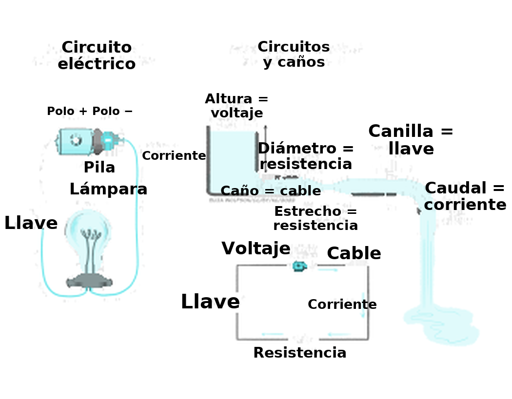
La corriente que circula en un circuito se relaciona con el voltaje a través del circuito y con la conductancia o la resistencia de los cables que lo componen, según la ley de Ohm.
Ley de Ohm
La corriente es proporcional al voltaje y a la conductancia, e inversamente proporcional a la resistencia:
Corriente = Voltaje x Conductancia
O
Corriente = Voltaje / Resistencia
Podés volver a mirar la ley de Ohm más adelante, cuando empieces a pensar en las corrientes que circulan en las neuronas.
Como podés ver, si la resistencia aumenta y el voltaje se mantiene igual, la corriente (el flujo de partículas cargadas) va a disminuir. A la inversa, cuando la resistencia disminuye, la corriente va a aumentar. En la analogía de los caños de agua (Fig. 3.1b), una resistencia alta es como tener caños angostos. Si el orificio en el medio del caño es diminuto, no va a salir mucha agua a chorro, por más grande que sea la presión del agua; pero si agrandás el orificio (aumentando la conductancia o reduciendo la resistencia), va a salir mucha agua por el orificio. A medida que el tanque de agua se vacía, sin embargo, la presión del agua (el voltaje) disminuye y el flujo de agua (la corriente) se va a reducir.
Los nervios conducen la electricidad más lentamente que los cables
Las corrientes eléctricas del cuerpo no son exactamente iguales a las corrientes eléctricas de un cable.
En 1849, Hermann von Helmholtz midió la velocidad a la que fluye la electricidad en el nervio ciático (de la pata) de una rana, estimulándolo eléctricamente en un extremo y midiendo la señal eléctrica en el otro. Encontró que la velocidad a la que fluía la electricidad (o se «conducía») a lo largo de un nervio era de 30-40 m/s, alrededor de un millón de veces más lenta que la velocidad a la que la electricidad viaja por un cable.
Entonces, ¿por qué la señalización eléctrica en los nervios es tanto más lenta que en los cables? En un cable, los electrones (pequeñas partículas con carga negativa) viajan a lo largo del cable, y pueden hacerlo muy rápido en materiales como los metales, que conducen bien la electricidad. En los nervios, en cambio, las partículas cargadas son iones, no electrones. Son partículas con carga positiva (o, a veces, negativa) mucho más grandes que los electrones, y no se desplazan a lo largo del nervio como lo hacen los electrones. En cambio, durante un impulso nervioso —denominado potencial de acción—, los iones con carga positiva entran al axón neuronal desde el exterior. Cuando los iones positivos entran a la célula, el interior de la célula se vuelve más positivo.
Este pequeño tramo del axón que se vuelve más positivo desencadena movimientos de iones positivos hacia el tramo siguiente del axón, que también se vuelve positivo y desencadena los movimientos de iones a través del tramo siguiente del axón, y así sucesivamente, como una ola —la de un estadio— de potencial positivo que recorre el nervio. En definitiva, de todos modos hubo una señal eléctrica que se desplazó de un extremo del axón al otro, pero llegó más lentamente que si los electrones hubieran viajado simplemente a lo largo del cable.
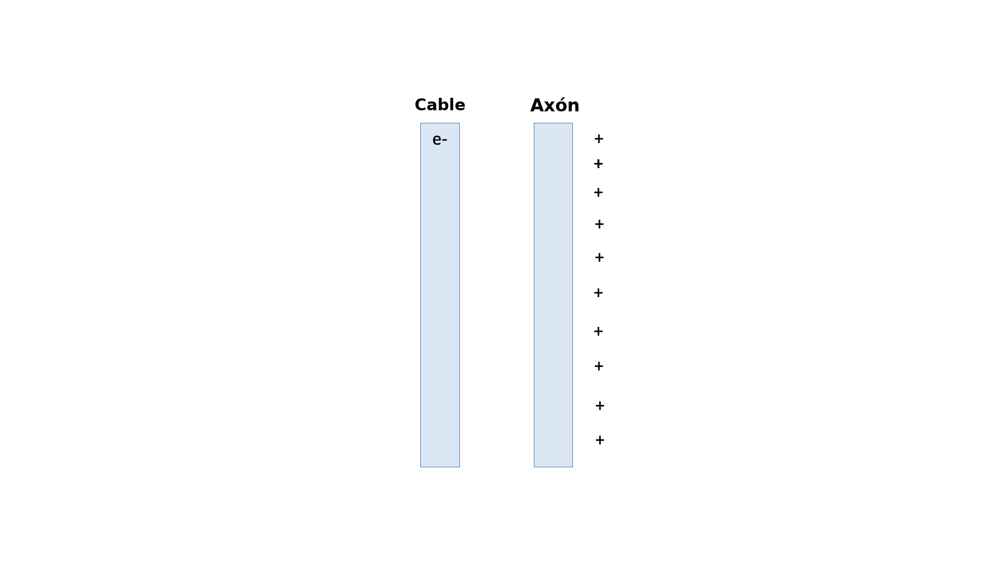
Una breve historia de la electrofisiología
La importancia de la electricidad para animar nuestros cuerpos —un paso, en cierto modo, hacia la generación de conductas— fue descubierta a fines del siglo XVIII por Lucia y Luigi Galvani.
En un laboratorio de su casa, la pareja descubrió que la electricidad aplicada a la pata de una rana hacía que el músculo se sacudiera. El músculo de la pata de la rana también se sacudía cuando se lo conectaba al nervio con un material que conduce la electricidad. Concluyeron que el cuerpo genera una «electricidad animal» para contraer los músculos.
El estudio de cómo el cuerpo genera y usa la electricidad se denomina ahora electrofisiología. La electricidad animal se estudió más a fondo, y el sobrino de los Galvani, Giovanni Aldini, la hizo (in)famosa al realizar demostraciones públicas de electricidad animal en los cuerpos de prisioneros ejecutados y también en cabezas de bueyes. Los relatos de estas demostraciones de «galvanismo» inspiraron a la joven Mary Shelley a escribir Frankenstein, en el que el monstruo se anima mediante la electricidad.
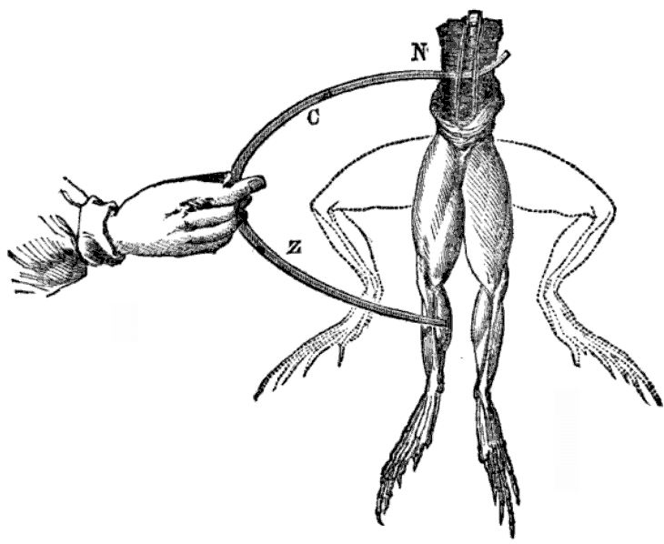
A mediados del siglo XIX, con el desarrollo de instrumentos para medir corrientes eléctricas, el fisiólogo alemán Emil Du Bois-Reymond pudo medir el cambio de corriente que se produce en los nervios y los músculos cuando se activan —lo que ahora denominamos «potencial de acción»—, mientras que Hermann von Helmholtz pudo medir la velocidad de conducción de la transmisión eléctrica a lo largo de un nervio.
Nuevos desarrollos tecnológicos permitieron a Julius Bernstein, que había trabajado tanto con Du Bois-Reymond como con Helmholtz, registrar por primera vez el curso temporal del potencial de acción en 1868. Mostró que el potencial de acción duraba alrededor de 1 ms y que, en su pico, el voltaje sube por encima de cero. Bernstein también midió el potencial de membrana en reposo, de alrededor de -60 mV, apoyándose en ideas desarrolladas por Walther Nernst, quien propuso que el potencial de membrana en reposo queda determinado por la conductancia al potasio de la membrana. Charles Ernest Overton agregó a esto el concepto de que el intercambio de sodio y potasio es fundamental para la excitabilidad de las células.
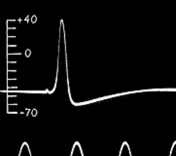
La base iónica del potencial de acción fue dilucidada por completo entre 1939 y 1952 por Alan Hodgkin y Andrew Huxley, quienes usaron el axón gigante de calamar para realizar los primeros registros intracelulares del potencial de acción. Desarrollaron el uso de la fijación de voltaje (voltage clamp), que usa un amplificador de retroalimentación para mantener el voltaje de una célula en un nivel establecido. El amplificador de retroalimentación lo hace detectando pequeños cambios de voltaje e inyectando corriente para revertir esos cambios, de modo que el voltaje a través de la membrana no cambie. Esta corriente inyectada es opuesta a la que fluye a través de la membrana de la célula: si entra carga positiva a la célula, la despolariza (la vuelve más positiva) y el amplificador va a inyectar carga negativa para contrarrestar esta despolarización. A la inversa, la carga positiva que sale de la célula la volvería más negativa (hiperpolarizada), de modo que el amplificador va a inyectar carga positiva para contrarrestar la corriente positiva saliente y mantener constante el voltaje a través de la membrana. Por lo tanto, la cantidad de corriente inyectada por el amplificador puede usarse para determinar qué corrientes fluyen realmente a través de la membrana de la célula. Mediante la fijación de voltaje, Hodgkin y Huxley pudieron disecar las corrientes entrantes y salientes y, luego, modelar matemáticamente las propiedades del influjo de sodio y de potasio para reproducir con precisión el potencial de acción. Después se encontró que estos modelos coincidían con las propiedades de compuerta de los canales de sodio y de potasio dependientes de voltaje. Vas a aprender todo esto en el próximo capítulo.
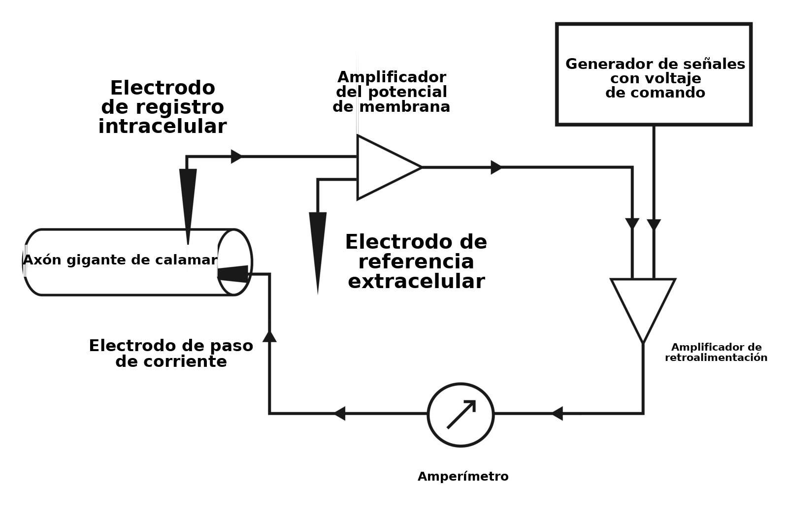

El registro en parche, desarrollado por Erwin Neher y Bert Sakmann en la década de 1970 y principios de la de 1980, permitió registrar cambios de corriente muy pequeños, incluso los de canales iónicos individuales. El registro en parche consiste en usar un microelectrodo de vidrio con una punta muy pequeña, que puede apoyarse contra la membrana celular. Al aplicar succión se sella firmemente la punta del electrodo sobre la célula, de modo que la corriente solo puede fluir desde el electrodo a través de la membrana adherida, lo que reduce el ruido y permite estudiar las propiedades de canales iónicos individuales. Si se aleja el electrodo de la célula, queda un pequeño parche de membrana en el electrodo y se forma un parche inside-out. Luego se pueden aplicar distintos fármacos al baño para ver cómo cambian la actividad de los canales iónicos de este diminuto parche de membrana. Como alternativa, cuando el electrodo está adherido a la célula, el parche de membrana adherido al electrodo puede romperse al aplicar una succión mayor. Esta configuración de célula entera permite estudiar las corrientes de membrana de toda la célula. Si en este punto se aleja el electrodo de la célula, puede formarse un parche «outside-out». Estas distintas adaptaciones de la electrofisiología de registro en parche son herramientas clave en el estudio actual de las propiedades eléctricas de la señalización neuronal.
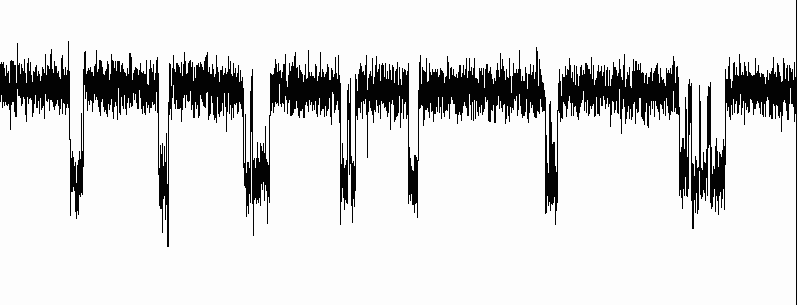
En conjunto, la electrofisiología ha generado una gran cantidad de conocimiento sobre cómo las neuronas integran y generan las señales eléctricas, cómo los distintos canales iónicos contribuyen a esas señales y cómo las canalopatías iónicas (la disfunción de los canales iónicos) contribuyen a la enfermedad. Por ejemplo, el síndrome de Dravet es una epilepsia familiar grave causada por mutaciones en el gen SCN1A. Este gen codifica un canal de sodio que se encuentra sobre todo en las interneuronas inhibitorias. Como la mutación impide que los canales de sodio funcionen igual de bien, las interneuronas no pueden disparar potenciales de acción con la misma eficacia para inhibir a las neuronas excitatorias, que se vuelven hiperactivas y provocan crisis epilépticas.
¿Cómo señalizan eléctricamente las células como las neuronas?
Las células señalizan eléctricamente al controlar cómo los iones atraviesan sus membranas, con lo que cambia el voltaje a través de la membrana celular. Este cambio de voltaje a través de la membrana celular es la señal eléctrica. Los iones más comunes que se desplazan a través de la membrana celular para producir este cambio de voltaje son los iones de sodio (Na+), los iones de potasio (K+), los iones de cloruro (Cl–) y los iones de calcio (Ca2+). Estos iones portan cargas distintas: los iones de sodio y los de potasio tienen, cada uno, una sola carga positiva, el cloruro tiene una sola carga negativa y los iones de calcio portan dos cargas positivas. Los iones con carga positiva se denominan cationes, mientras que los iones con carga negativa se denominan aniones. La cantidad de carga que porta un ion es su valencia.
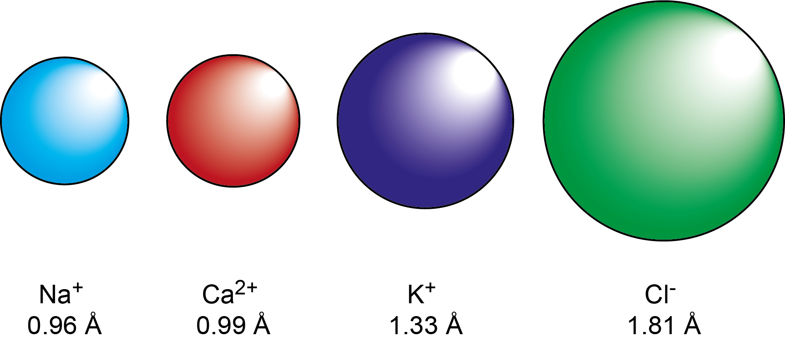
Además de portar cargas distintas, los iones tienen tamaños distintos.
Parte del flujo de iones se produce en reposo, y otro flujo se produce durante la señalización.
En esta sección, vamos a considerar qué ocurre en reposo y, en la sección siguiente, examinar qué sucede para que se genere una señal eléctrica.
La membrana plasmática que rodea a una célula está formada por una bicapa de fosfolípidos
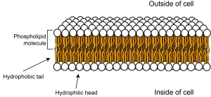
Las células están rodeadas por una membrana plasmática que mantiene el interior separado del exterior. Esta membrana está formada por moléculas denominadas fosfolípidos. Los fosfolípidos tienen tres partes principales: dos colas grasas que son hidrofóbicas (es decir, que «temen al agua») y una cabeza que es hidrofílica (es decir, que «ama el agua»). Las moléculas de agua están levemente cargadas, con zonas de carga positiva y zonas de carga negativa (son dipolos). Esto significa que otras partículas con carga son atraídas hacia ellas, mientras que las partículas sin carga son repelidas por ellas. La cabeza del fosfolípido porta un grupo fosfato con carga negativa, por lo que es atraída por el agua, mientras que las colas grasas sin carga son repelidas por el agua, pero se mezclan con facilidad con otras colas sin carga. Esto significa que las moléculas de fosfolípidos se alinean para formar una bicapa (dos capas paralelas de moléculas de fosfolípidos), con las colas grasas unas junto a otras en el interior de la membrana y las cabezas hidrofílicas orientadas hacia el interior y el exterior acuosos de la célula.
Las moléculas pequeñas, como el oxígeno y el dióxido de carbono, pueden difundirse a través de la membrana, pero, como el interior de la membrana no tiene carga y es hidrofóbico, el agua y otras partículas con carga no pueden atravesarla. Esto significa que el interior de la célula se mantiene separado del exterior y que el líquido intracelular, o citosol, del interior de la célula puede tener una composición distinta de la del líquido que está fuera de la célula: el líquido extracelular.
Componentes del líquido intracelular frente al líquido extracelular
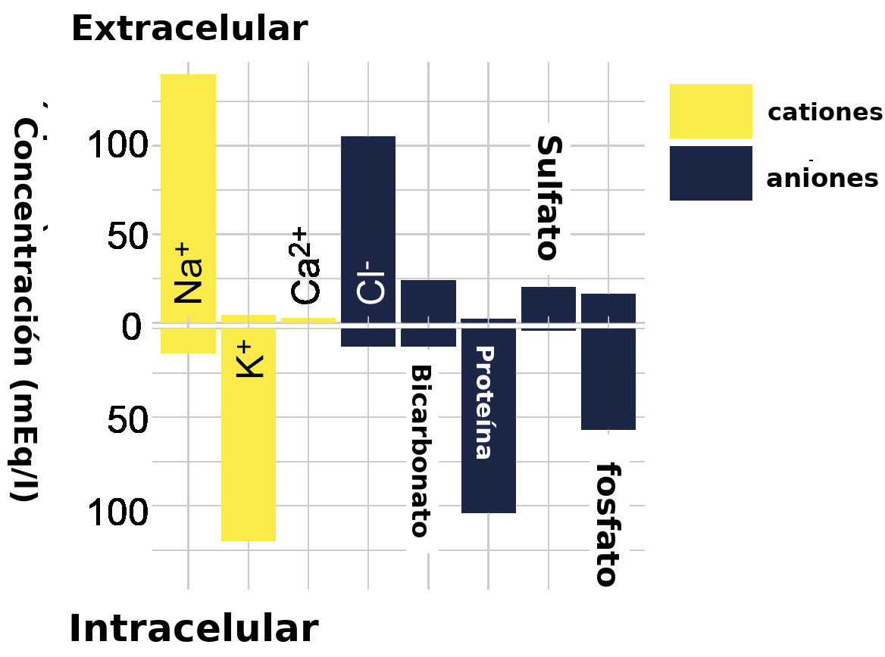
El líquido intracelular (LIC) y el líquido extracelular (LEC) están formados por sustancias distintas (Fig. 3.10). Ambos son en su mayor parte agua, pero la concentración de iones y de otras sustancias es muy distinta. En particular, hay una concentración más alta de iones de potasio dentro de la célula que fuera de la célula (~130 mM en el interior frente a ~4 mM en el exterior), y una concentración alta de iones de sodio fuera de la célula en comparación con el interior de la célula (~145 mM en el exterior frente a ~15 mM en el interior). También hay más iones de cloruro y de calcio fuera de la célula que dentro de la célula. El LIC también contiene más proteína y una concentración más alta de aniones orgánicos que el LEC.
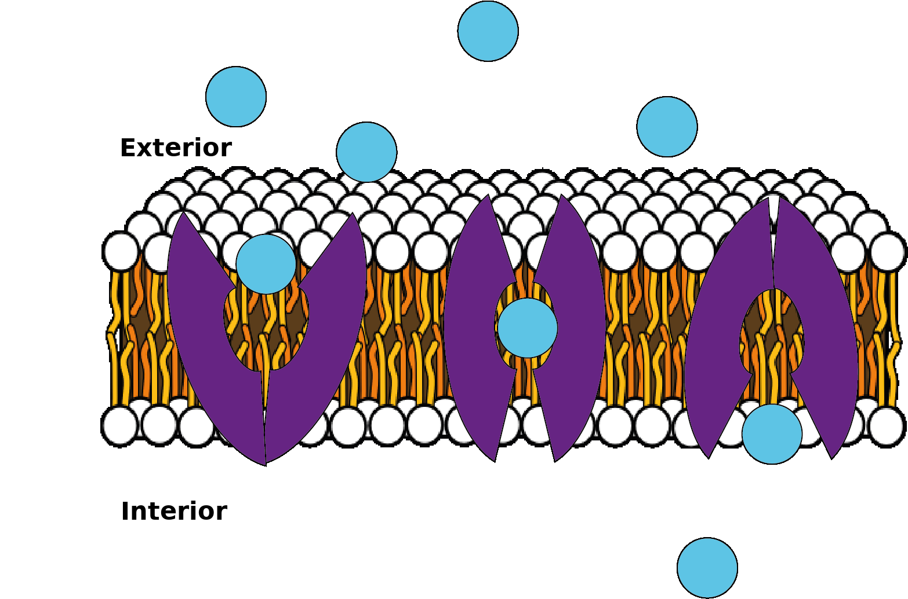
Los canales iónicos y los transportadores permiten que las sustancias atraviesen la membrana plasmática
Si la membrana celular estuviera formada solo por la bicapa de fosfolípidos y nada más, ningún ion podría atravesar jamás la membrana y no sería posible ninguna señalización eléctrica. Sin embargo, numerosas proteínas están insertadas en la membrana lipídica. Algunas de ellas son proteínas transportadoras que pueden trasladar moléculas específicas a través de la membrana (Fig. 3.11). Por ejemplo, la glucosa se introduce en la célula mediante transportadores de glucosa.
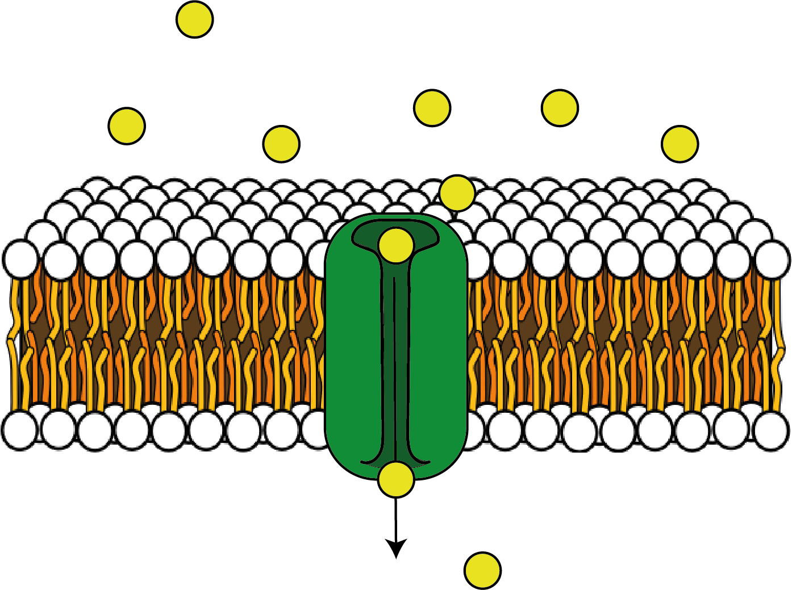
Además de los transportadores, los canales iónicos también son proteínas insertadas en la membrana plasmática (Fig. 3.12).
Estas proteínas forman un poro en su centro que, en esencia, constituye un orificio en la membrana. Pueden estar abiertas todo el tiempo (canales de fuga) o abrirse por distintos desencadenantes, como los cambios de voltaje (canales iónicos dependientes de voltaje) o la unión de distintas moléculas (canales iónicos activados por ligando). Muchos de estos canales iónicos son selectivos, es decir, solo dejan pasar ciertos iones. Entre los ejemplos de canales iónicos selectivos se encuentran los canales de fuga de potasio o los canales de sodio, de potasio o de calcio dependientes de voltaje. Esta selectividad iónica significa que las células pueden controlar los flujos de iones a través de sus membranas al abrir determinados canales iónicos.
El potencial de membrana en reposo
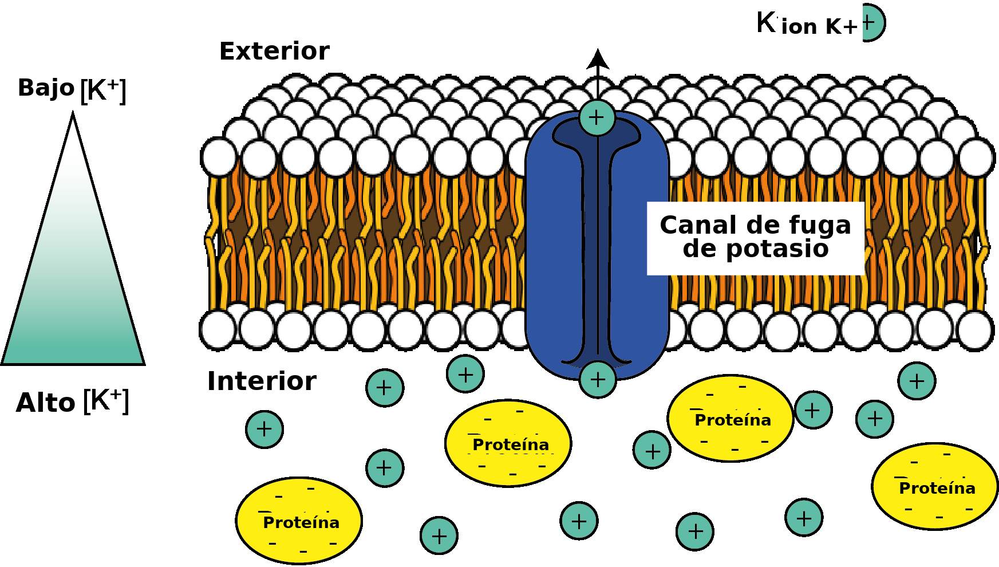
En reposo, en ausencia de cualquier actividad de señalización neuronal, resulta que cierto tipo de canal iónico —los canales de fuga de potasio— está abierto. Esto significa que, en reposo, los iones de potasio (K+) pueden salir de la célula. Debido al gradiente de concentración de K+ a través de la célula —es decir, porque hay más iones K+ dentro de la célula—, al moverse al azar, algunos iones encuentran estos orificios de la membrana y los atraviesan para salir de la célula (Fig. 3.13).
Sin embargo, una vez que algunos iones K+ con carga positiva han salido de la célula, queda un desequilibrio de cargas positivas y negativas en el interior de la célula. El interior de la célula tiene ahora más carga negativa que el exterior de la célula. Ahora hay un voltaje, o una diferencia de potencial, a través de la célula (Fig. 3.14), que podríamos considerar un gradiente eléctrico.
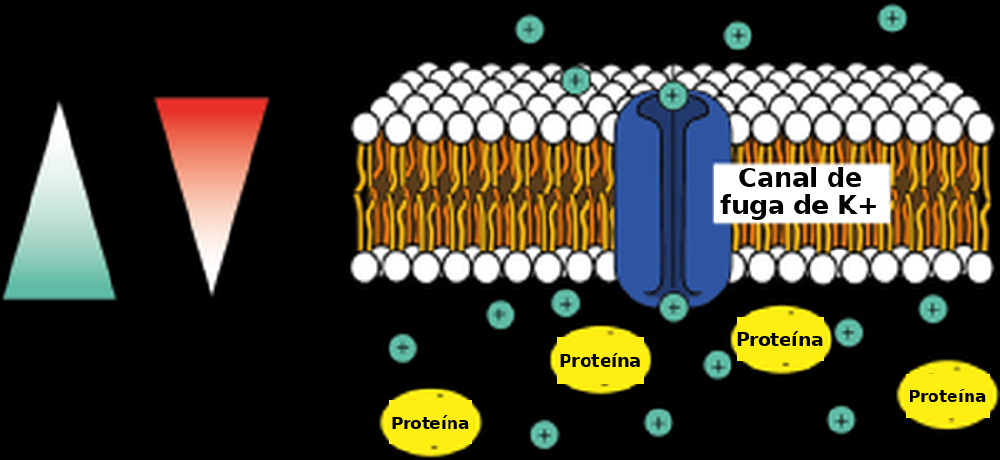
Pero los iones K+ tienen carga positiva, de modo que son atraídos por las cargas negativas y repelidos por las cargas positivas. Así, una vez que hay una diferencia de potencial o un gradiente eléctrico a través de la membrana de la célula, los iones K+ son repelidos por la carga positiva del exterior de la célula y atraídos por la carga negativa del interior de la célula. Para los iones K+, el gradiente eléctrico actúa, por lo tanto, en sentido opuesto al del gradiente de concentración. El gradiente de concentración del K+, con concentraciones altas dentro de la célula y concentraciones bajas fuera de la célula, tiende a hacer que los iones K+ salgan de la célula, mientras que el gradiente eléctrico tiende a hacer que los iones K+ entren en la célula.
Denominamos gradiente electroquímico a la combinación del efecto del gradiente eléctrico y del gradiente de concentración. Este movimiento de iones K+ hacia el exterior de la célula a través de canales de fuga es el principal determinante del potencial de membrana en reposo de la célula —la diferencia de voltaje a través de su membrana en reposo—, que es de alrededor de -70 mV en las neuronas.
Potenciales de equilibrio
EK = -80 mV
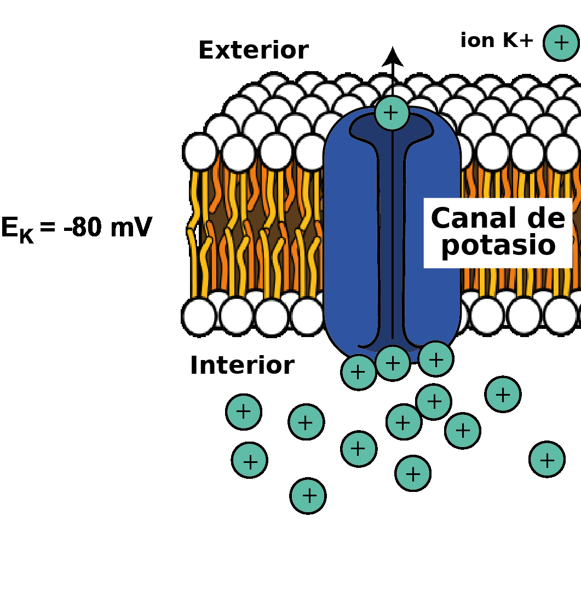
Los iones K+ salen de la célula a favor del gradiente de concentración hasta que el gradiente eléctrico es tan negativo que se impide la salida de los iones K+. En ese punto, el K+ está en equilibrio: el número de iones que salen debido al gradiente de concentración es igual al número de iones que entran debido al gradiente eléctrico, de modo que no hay un movimiento neto de K+ a través de la membrana. La diferencia de voltaje a través de la célula a la que se alcanza este equilibrio se denomina potencial de equilibrio de un ion determinado. Queda determinado por la diferencia de concentración a través de la membrana y por la carga del ion. Podemos considerar distintos iones y el modo en que sus gradientes electroquímicos configuran el potencial de equilibrio de cada uno.
Como vimos más arriba, dado que el K+ tiene carga positiva y está en mayor concentración dentro de la célula, tiende a salir de la célula cuando se abren canales permeables al K+ en la membrana celular. La salida de iones K+ positivos vuelve más negativo el potencial de membrana de la célula (el gradiente eléctrico o la diferencia de voltaje a través de la membrana de la célula). La membrana se vuelve cada vez más negativa hasta alcanzar el potencial de equilibrio del K+, cuando ya no hay flujo neto de K+. Por lo tanto, el potencial de equilibrio del K+ es negativo. En la mayoría de las células, es de alrededor de -80 mV. Suele escribirse como EK (o el potencial eléctrico del K+) = -80 mV.
ENa = +62 mV
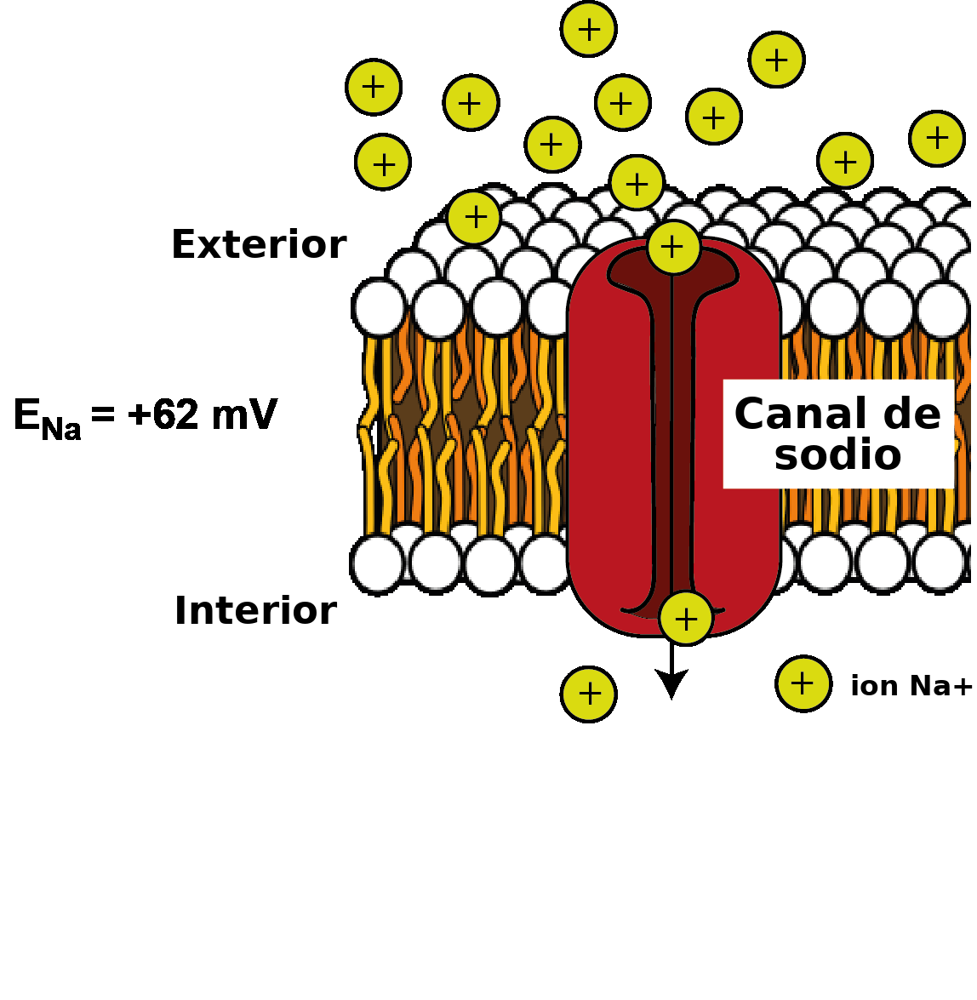
Hay más sodio (Na+) fuera de la célula que dentro de la célula, de modo que, si se abren en la membrana canales iónicos permeables al Na+, el sodio tiende a entrar a favor de su gradiente de concentración. El Na+ tiene carga positiva, por lo que al principio es atraído por el potencial negativo del interior de la célula. La entrada de Na+ vuelve, no obstante, más positivo el interior de la célula, hasta que ha entrado suficiente Na+ como para que el interior de la célula sea tan positivo que repele la entrada adicional de Na+. Es decir, se alcanza el equilibrio. Esto ocurre alrededor de + 62 mV. Por lo tanto, el potencial de equilibrio del Na+ (ENa; el potencial eléctrico a través de la célula en el que no hay flujo neto de iones Na+) es +62 mV.
ECl = -65 mV
Hay más cloruro (Cl-) fuera de la célula que dentro de la célula, de modo que, cuando se abren en la membrana canales iónicos permeables al Cl-, el Cl- tiende a entrar en la célula. Como el Cl- tiene carga negativa, su entrada vuelve más negativo el potencial de membrana de la célula, hasta que alcanza el equilibrio, al ser lo suficientemente negativo como para repeler la entrada adicional de Cl-. Esto ocurre alrededor de -65 mV, de modo que ECl = -65 mV.
La ecuación de Nernst
Se puede calcular matemáticamente el potencial de equilibrio de distintos iones mediante la ecuación de Nernst.
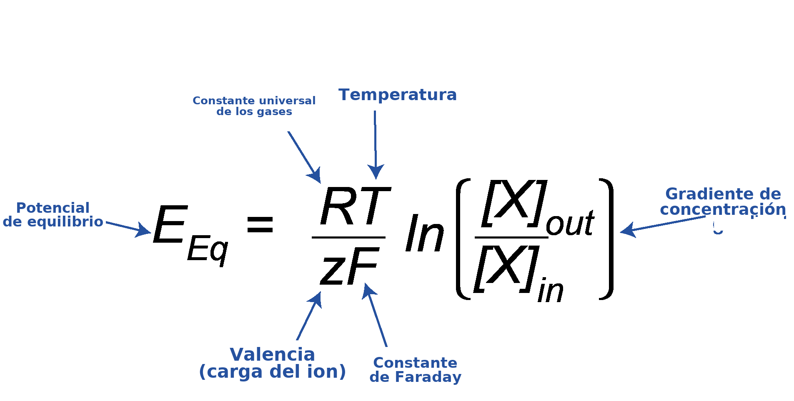
Esta ecuación puede parecer complicada, pero, si se la desglosa, se ve que solo relaciona el gradiente de concentración a través de la membrana de un ion X ([X]out/[X]in, donde [X] es la concentración del ion de interés; out indica el exterior y in el interior) y la carga o valencia de ese ion (z) con el potencial de equilibrio (EEq). R y F no son más que constantes, y T es la temperatura, que es constante en el interior del cuerpo, de modo que R, F y T pueden ignorarse acá, ya que siempre permanecen iguales.
Logaritmos y la ecuación de Nernst
Para comprender la ecuación de Nernst por completo, también hace falta entender qué significa «ln». Es una instrucción que significa «tomar el logaritmo natural del número que está entre paréntesis». (En este caso, ese número es el cociente entre las concentraciones externa e interna). El logaritmo de un número es la potencia a la que hay que elevar una base para obtener el número original. La base puede ser cualquier número. En el primer ejemplo de más abajo se usa la base 10, pero, en el caso del logaritmo natural (ln), se trata de una constante matemática específica denominada «e», o constante de Euler. Es aproximadamente 2,71828.
Ejemplo 1: logaritmos en base 10:
y es la potencia a la que hay que elevar 10 para igualar a x; por lo tanto, y es el logaritmo en base 10 (log10) de x.
y = log10(x)
10y = x
Ejemplo 2: logaritmos en base e (logaritmos naturales):
En las ecuaciones de abajo, y es la potencia a la que hay que elevar e para igualar a x; por lo tanto, y es el logaritmo natural (ln, también escrito loge) de x.
y = ln(x)
ey = x
Más sobre logaritmos y potencias
Elevar un número a una potencia positiva lo hace más grande, mientras que elevar un número a una potencia negativa lo hace más pequeño (x-1 equivale a 1/x; x-2 equivale a 1/x2). A la inversa, el logaritmo de un número entre 0 y 1 es negativo, y el logaritmo de un número mayor que 1 es positivo. Por ejemplo (usando 10 como base, y no e, para que los cálculos resulten más claros):
102 = 100; log10(100) = 2
10-2 = 1/100 = 0,01; log10(0,01) = -2
Podés encontrar más fundamentos sobre potencias y logaritmos acá. Ahora se puede observar el K+, el Na+ y el Cl– y ver cómo se obtienen sus potenciales de equilibrio a partir de esta ecuación, incluso si solo se considera a grandes rasgos la carga del ion y si hay más de ese ion dentro o fuera de la célula.
EK = -80 mV
Hay más K+ dentro de la célula que fuera de ella, de modo que ([K+]out/[K+]in) < 1. El logaritmo natural de un valor <1 es negativo. Luego hay que multiplicar ese resultado por la carga, que es +1 para el K+. Por lo tanto, el potencial de equilibrio, EK, es negativo.
ENa = +62 mV
Hay más Na+ fuera de la célula que dentro de ella, de modo que [Na+]out/[Na+]in) >1. El logaritmo natural de los números mayores que 1 es positivo, y este valor se multiplica por la carga de +1 del Na+. Por lo tanto, el potencial de equilibrio, ENa, es positivo.
ECl = -65 mV
Hay más Cl– fuera de la célula que dentro de ella, de modo que ([Cl–]out/[Cl–]in) >1. El logaritmo natural de los números mayores que 1 es positivo, pero luego se multiplica por la carga de -1 del Cl–. El potencial de equilibrio, ECl, es por lo tanto negativo.
El potencial de membrana
Ya se señaló que, cuando la célula está en reposo, los canales de fuga de potasio están abiertos y esto lleva el potencial de membrana en reposo hacia valores negativos, de alrededor de -70 mV. Pero también se acaba de ver que el potencial de equilibrio del potasio es de -80 mV. Si el potencial de membrana en reposo queda determinado por el flujo de potasio a través de los canales de fuga, ¿por qué el potencial de membrana en reposo no es igual a EK? La respuesta es que, en reposo, la membrana también es levemente permeable al Na+, porque también está abierto un pequeño número de canales de sodio. Esto desplaza levemente el potencial de membrana en reposo, alejándolo del potencial de equilibrio del potasio y acercándolo al potencial de equilibrio del sodio. El potencial de membrana en reposo es el más próximo a EK, porque la membrana es la más permeable a los iones K+ (hay más canales de K+ abiertos), pero es un poco más positivo que EK debido a la escasa permeabilidad en reposo a los iones Na+.
De hecho, en cualquier momento de la señalización neuronal o en reposo, el potencial de membrana queda determinado por los gradientes electroquímicos de los distintos iones y por la permeabilidad relativa de la membrana a esos iones. Las células controlan sus potenciales de membrana abriendo y cerrando canales iónicos de la membrana, con lo que se modifica la permeabilidad a distintos iones, que entonces fluyen a favor de sus gradientes electroquímicos hacia el interior o el exterior de la célula. Cuando se abren los canales de sodio, por ejemplo, aumenta la permeabilidad al Na+ y los iones Na+ ingresan a la célula, lo que desplaza el potencial de membrana hacia valores más positivos, en dirección al potencial de equilibrio del Na+, ENa. Cuando los canales de sodio se cierran, la permeabilidad al Na+ disminuye otra vez y, como ahora la membrana es más permeable al K+ que al Na+, el potencial de membrana vuelve a hacerse más negativo y retorna al potencial de membrana en reposo. Hay muchos tipos de canales iónicos, selectivos para distintos iones y con distintas propiedades de compuerta; es decir, se abren y se cierran ante estímulos diferentes, como los cambios en el voltaje de membrana y la unión de moléculas específicas. Vamos a tratar estos temas con más detalle en capítulos posteriores.
La ecuación de Goldman-Hodgkin-Katz
La ecuación de Goldman-Hodgkin-Katz permite calcular el potencial de membrana de la célula (Em) a partir de las permeabilidades de la membrana a distintos iones (pK, pNa y pCl para el K+, el Na+ y el Cl–, respectivamente) y de sus gradientes de concentración (Fig. 3.19). Al igual que en la ecuación de Nernst (véase el recuadro, Fig. 3.18), R y F son constantes, y T es la temperatura, de modo que RT/F puede considerarse invariable. Durante la señalización neuronal, la permeabilidad de la membrana a los distintos iones cambia, y el potencial de membrana se pondera a favor del potencial de equilibrio del ion con mayor permeabilidad en ese momento. Obsérvese que el gradiente de concentración del Cl– se expresa de manera inversa respecto del K+ y del Na+, para dar cuenta de que, al estar cargado negativamente, posee carga opuesta a la del K+ y a la del Na+.
La ATPasa de sodio-potasio
Más arriba se vio que, durante el reposo y la señalización neuronal, los iones fluyen por canales iónicos a favor de sus gradientes electroquímicos y modifican el potencial de membrana. Este flujo de iones a favor de sus gradientes electroquímicos no requiere energía. El potencial de membrana se controla cambiando la permeabilidad de la membrana a distintos iones, y no cambiando los gradientes de concentración entre el interior y el exterior de la célula. Basta con que fluyan muy pocos iones para cambiar el potencial de membrana de una célula, de modo que las concentraciones de iones dentro y fuera de la célula no cambian mucho a corto plazo. Sin embargo, como el potencial de membrana no se sitúa en el potencial de equilibrio de ningún ion, incluso en reposo, hay una corriente o un flujo neto de K+ hacia el exterior de la célula y un flujo neto de Na+ hacia el interior de la célula.
A más largo plazo, sin embargo, estos flujos disiparían los gradientes de concentración iónicos si las células no tuvieran un mecanismo para bombear de manera continua los iones de regreso al lugar del que salieron. La bomba que cumple esta función tan importante es la bomba de sodio-potasio, o ATPasa de Na+/K+. Es una proteína que se encuentra en la membrana plasmática y bombea sodio hacia el exterior de la célula y potasio de regreso hacia el interior de la célula. Como este bombeo ocurre en contra de los gradientes electroquímicos de los iones, se requiere energía en forma de ATP para devolver los iones y mantener sus gradientes de concentración. La ATPasa de sodio-potasio retira un grupo fosfato del ATP para formar ADP, y así libera algo de energía que cambia la forma (o conformación) de la ATPasa de Na+/K+ y le permite sacar 3 iones Na+ de la célula e ingresar 2 iones K+ a la célula por cada molécula de ATP utilizada. Como se extraen 3 iones Na+ por cada 2 iones K+ que ingresan a la célula, la ATPasa de Na+/K+ es electrogénica y produce una exportación neta de carga positiva. Esto contribuye un poco al potencial de membrana en reposo negativo, pero, con mucho, el efecto más importante de la ATPasa de Na+/K+ sobre el potencial de membrana en reposo es mantener el gradiente electroquímico del potasio, de modo que se conserve el potencial de equilibrio del potasio. Como incluso en reposo hay flujos iónicos, la ATPasa de Na+/K+ está siempre en funcionamiento, pero su actividad aumenta cuando las neuronas señalizan y, por lo tanto, hay que bombear de regreso más iones.
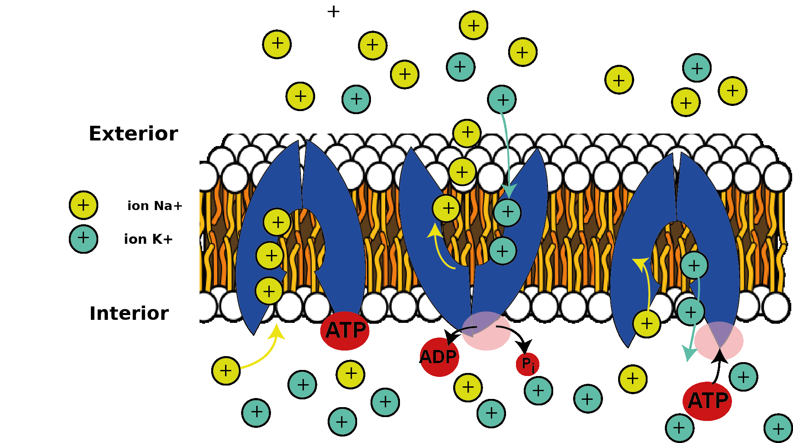
Mantener los gradientes de concentración de los iones es tan importante para sostener la actividad neuronal que la ATPasa de Na+/K+ es el proceso de mayor consumo energético del encéfalo y consume más de la mitad de toda la energía que este utiliza. Como el encéfalo es un órgano energéticamente muy costoso, que utiliza el 20% de la energía del cuerpo en reposo, a pesar de constituir solo el 2% de la masa del cuerpo, la ATPasa de Na+/K+ por sí sola utiliza más del 10% de la energía que consume todo el cuerpo – ¡un dato asombroso si se tiene en cuenta que hay más de 20.000 tipos distintos de proteínas en el cuerpo en un momento dado!
Ideas clave
- La señalización eléctrica en las neuronas (y en otras células) funciona porque estas poseen canales iónicos que permiten que iones específicos fluyan a través de las membranas neuronales y cambien el potencial de membrana de la célula.
- El potencial de membrana de la célula se determina por el gradiente de concentración de los iones a través de su membrana y por la permeabilidad de la membrana a esos iones.
- Los iones fluyen a favor de sus gradientes electroquímicos, lo que no requiere energía, pero debe consumirse energía en forma de ATP para alimentar la ATPasa de Na+/K+, que bombea los iones de regreso, en contra de sus gradientes electroquímicos, para mantener sus gradientes de concentración a través de la membrana.